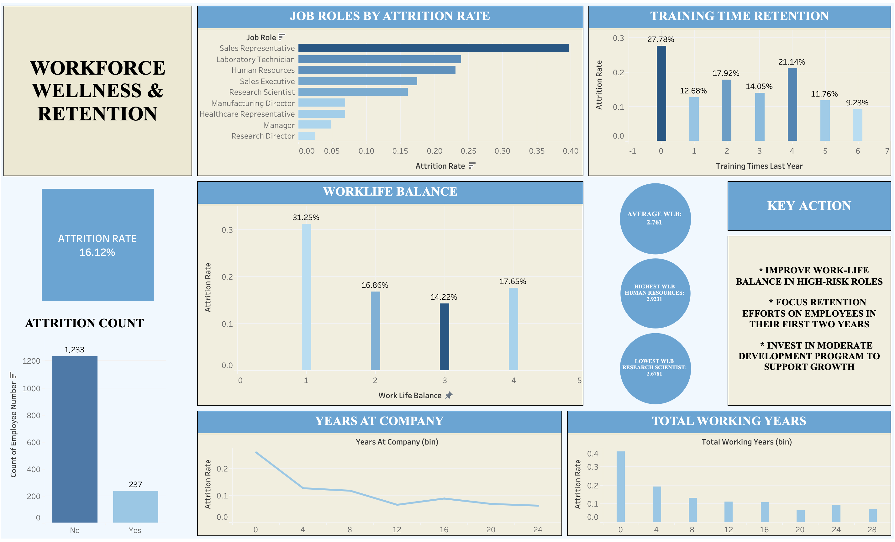

Workforce Wellness & Retention Analysis
Over the course of 15 days, I developed a Workforce Attrition & Retention dashboard to better understanding the key drivers behind long-term reduction of employees in the workforce.

Question asked:
How workforce well-being, training, and tenure impact employee retention and performance.
Key Insights:
Using an HR dataset, I explored how factors such as work-life balance, tenure and training impact retention. The goal was to uncover actionable insights that organization can use to improve workforce stability. Key insights collected include,
- Employees with poor work-life balance are significantly more likely to leave current company
- Attrition is highest within the first 1-2 years of employment
- Training has a moderate impact on retention
Summary
The Workforce Wellness & Retention Analysis dashboard reflects the key drivers behind the long-term reduction of employees in the workforce. According to Bucketlist, the average annual attrition rate in tech ranges from 13% to 21%, while IBM HR Analytics reports a 16.12% attrition rate. Through the numerous charts, the leading causes become apparent as to why this phenomenon is happening. Notably, Work-Life Balance (WLB) plays a key role, with poor WLB, leading to a higher likelihood of an employee leaving the company. Attrition is highest during early careers compared to longer-tenure employees, as seen on the bottom two graphs. Lastly, there is a greater emphasis on development opportunities that support career growth, which significantly decreases attrition. Employees with minimal training have a higher attrition rate than those who receive ongoing training, despite training time and growth opportunities having a minor overall impact on attrition rates. The goal of the dashboard is to uncover actionable insights not only for the tech industry but also for all industries to improve workforce stability.
Business Impact
This matters in the real world because:
- Maximizes Productivity: Longer Tenure = Faster and more effective output
- Enhance Morale: Stability helps build trust, teamwork and job satisfaction
- Cost Saving: Less time and money spent on finding new talent
Tools & Skills
- Data Cleaning (Excel)
- Data Visualization (Tableau)
- Data Analysis (Modeling, Descriptive Statistic)
- Dashboard Design
- Microsoft Excel
- Exploratory Data Analysis
- Key Performance Indicators
- Insight Generation
- Problem Solving